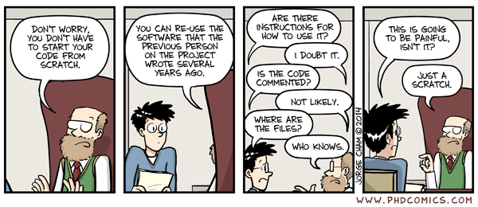

R is for Reproducibility
In data science (and all fields of science), being able to reproduce existing results is critical. One could argue being able to reproduce results is fundamentally what makes it science. However, many fields (including data science) are going through a “reproducibility crisis” where scientists are unable to recreate the results from their own or other experiments. There are many factors contributing to this such as
- Do you have the same materials (either physical or data) as the original experiment?
- Can you recreate the experimental environment?
- Are the methods listed detailed enough?
Everyone agrees that reproducibility is important but that doesn’t make it less of a challenge in practice. In this blog I’ll focus on reproducibility in data science but this also applies to other fields (particularly computational) of science as well.
Why is it so hard?
It’s worth distinguishing between reproducibility and repeatability. Reproducibility is having another person (this can also be your future self) being able to fully recreate your results (either using the same or different methods). Repeatability (also known as replicability) is “given the same data and tools can you get the same result?”. In data science, people (including me!) tend to use the term reproducibility when they technically mean repeatability. For the rest of the blog I’ll use the two terms interchangeably.
One of the reasons reproducibility is hard is that things change all the time. Data changes, the tools change, there could be randomness baked into an algorithm etc. There are also other systemic factors which I will touch on later. For now, let’s just focus on the technical aspects.
Do you have the same data?
Imagine you’re reading a paper about a model that can predict if a tweet is positive or negative. You want to reproduce their results so that you can apply the model to a different data set. You look at the methods section and read “the model was trained on a random sample of 100 000 tweets”. That’s great, but which 100 000 tweets?
There are many challenges associated having reproducible datasets
- The datasets need to be hosted somewhere (ideally somewhere you can interact with programatically). This could be something like an Amazon S3 bucket or Kaggle. This can be expensive with large datasets.
- The dataset should be static (or you should at least know how it’s changed). If you are reproducing a model trained on IMDB movie reviews but there are now 25000 more reviews in the dataset, this could affect the results.
- It’s not enough to have the same raw data, the processing pipeline should be the same. For example, how did the original authors handle missing data?
- The dataset might be sensitive! For example you might have a model trained on healthcare data where it is hard to share the underlying data.
Unfortunately there isn’t a solution to this problem that’s been widely adopted. There are a couple data version control solutions (e.g. https://dvc.org/) but many organizations create their own infrastructure (if they do anything at all). Many cloud providers provide dataset versioning but this can be expensive (especially for large datasets).
Do you have the same computational environment?

Fortunately, in data science it is easier to be able to replicate the experimental environment. In theory you are able to rerun the same code that other researchers used. This assumes a few things:
- The other researchers made their code available using a version control system like github or gitlab. It’s far from guaranteed that the associated code for a paper is made available for reasons such as intellectual property or competitive advantage. There is a great website which lists popular papers and their implementations so you know before you read the paper that you will be able to see the code.
- You are using the same operating system as the original researchers. Let’s imagine you have a Windows machine and they were running Linux. This might not seem like a big difference but it can cause discrepancies.
- You have the same version of all the code dependencies. What if the original researchers were using Tensorflow 1.15 and you have version 2.x installed? This could cause issues if the code behaviour has changed in some way.
- You have access to similar infrastructure. If the original model was trained on 1000 GPUs and you have a laptop, it will be impossible to reproduce the results.
One way to standardize parts of the computational environment is to use a containerization solution like Docker. This allows you to have the same code, dependencies and runtime environment. This does not solve the infrastructure issue but it provides a decent solution. Unfortunately, using docker is also complicated so might have a high barrier to entry for a lot of scientists. Spinning up the required resources using a cloud provider is also possible, but again this costs money.
Do you have the same model parameters?
If you are able to reproduce the compute environment and data processing, you still might need to retrain the model. One way around this is for researchers to share pretrained models but this isn’t always done. If you need to retrain the model from scratch you might not get exactly the same results. It depends on if the algorithms are deterministic or stochastic. Deterministic means that given the same inputs, parameters, and initial conditions you will get the same output. Stochastic processes have randomness inherent in them so you will get different output for the same input if you run the algorithm multiple times. There are many places where randomness can pop up
- Stochastic gradient descent is commonly used for optimization (e.g. in most deep learning models)
- In many embedding and dimension reduction algorithms there is randomness in the output. Points that are close in the higher dimensional space will still be close to points in the lower dimensional space, but the position of the points themselves may change
- Many models initialize their weights randomly
It’s possible to seed random number generators so that you get the same results when generating random numbers. However, these may be buried deep in libraries or not configurable.
Other barriers
There are other obstacles which prevent or discourage people from making truly reproducible models (or reproducing other peoples models). One of the biggest barriers is that reproducing others’ work is expensive both in terms of time and money. It can also be very frustrating when something doesn’t work as expected In academia researchers must publish papers which are novel in some way. It is very hard to publish a paper which says “we were able to reproduce this other work”. Researchers are incentivized to research new things rather than validating and exploring prior work. Similarly, in industry people are motivated to work on new products rather than replicating prior work.
Even if you are motivated, there are the challenges described above. Did the previous researchers make their data, compute environment, and methods available? One way to incentivize researchers to do this is to make it a mandatory component of publishing a paper.
Summary
As you might have learned, reproducibility is very important but it’s also challenging to do in practice. Fortunately it’s not all bad news. There are tools which are making it easier to do reproducible science for those who are willing to put in the work.
- Binder makes it really easy to run someone else’s Jupyter notebook. A Jupyter notebook is an interactive notebook which allows you to have code, documentation, and images (e.g. plots) all in the same document. They’re great for exploratory data analysis and documentation.
- Many cloud providers such as Azure provide machine learning capabilities. This makes it easier to keep track of models, parameters, and datasets.
- Easydata is a python library and git template to make it easier to do reproducible data science.